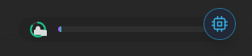
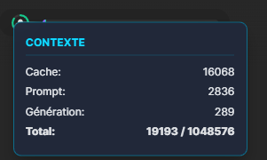
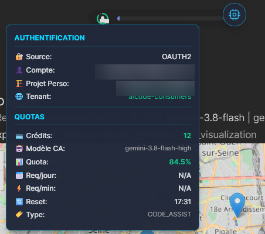
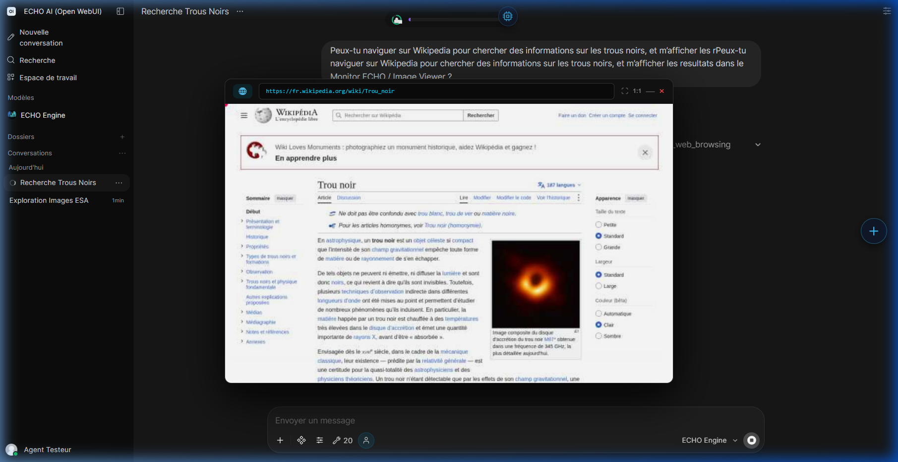
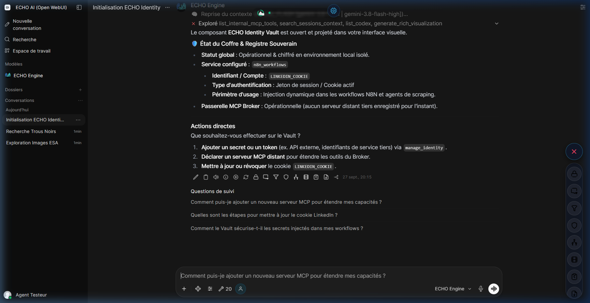

7. Écosystème HUD & UI
ECHO ne se limite pas à générer du texte dans une fenêtre de chat. Il dispose d'un moteur d'interface dynamique capable d'injecter des composants visuels directement dans l'interface d'Open WebUI : jauge de contexte, moniteur interactif, indicateurs de quota, éditeur de code et lecteur de rejeu.
💡 Qu'est-ce que le HUD ?
Le HUD (Heads-Up Display) n'est pas une application séparée : c'est une surcouche d'affichage injectée par-dessus l'interface d'Open WebUI. Elle affiche en temps réel des informations opérationnelles (occupation de la mémoire de travail, quota d'API, progression des sous-agents) sans alourdir le texte produit par le modèle.
Couche de Communication Sécurisée (UCTP) et Continuité des Fenêtres
Lorsque des interfaces riches ou des fichiers volumineux (comme l'éditeur Codex) doivent être affichés, le système découpe et transmet les données par fragments en arrière-plan, accompagnés d'une barre de progression visuelle afin de maintenir la réactivité du navigateur.
De plus, un gestionnaire de fenêtres dédié préserve votre organisation visuelle d'une discussion à l'autre : chaque fenêtre ouverte est rattachée à sa conversation d'origine, se met discrètement de côté lorsque vous changez de sujet et retrouve automatiquement sa position, ses dimensions et son contenu dès que vous y revenez (y compris après un rafraîchissement de la page ou depuis un second navigateur). Toutes les fenêtres partagent des contrôles homogènes (déplacement par la barre de titre, réduction _ et plein écran ⛶).
La Context Gauge (Cortex Monitoring)

La Context Gauge est l'outil central de pilotage de l'état cognitif. Elle est affichée en permanence dans la barre de navigation d'Open WebUI et mise à jour automatiquement à chaque tour de conversation.
A. Barre de contexte (tokens)
Une barre colorée à quatre segments représente l'utilisation de la fenêtre contextuelle en cours :
| Segment | Couleur | Rôle | Signification |
|---|---|---|---|
| Cache | Violet | Historique mis en cache | Tokens déjà ingérés et mis en cache par Google (économie de coût de ~90 %). |
| Prompt actif | Vert | Requête entrante | Charge active du message courant. |
| Génération | Orange | Réponse du modèle | Tokens produits par ECHO lors de ce tour. |
| Vide | Transparent | Capacité disponible | Espace mémoire de travail restant avant saturation. |
Au survol de la barre principale, une infobulle présente les valeurs détaillées (tokens en cache, prompt actif, génération, total avec son pourcentage d'occupation et capacité maximale de la fenêtre contextuelle) ainsi que la section DIFFÉRENTIEL (DERNIER TOUR) indiquant la variation totale de tokens, l'empreinte du tour sur la capacité maximale (ou l'espace libéré) et le taux de croissance ou de variation du contexte. À droite de la barre, une capsule sobre indique directement cette empreinte en pourcentage à deux décimales, avec un signe cohérent avec l'infobulle.

B. Icône Quota et Infobulle d'Authentification
L'anneau circulaire autour du cadenas à gauche de la barre s'anime d'une pulsation lumineuse pendant la réflexion de l'IA et indique la fraction de quota restante pour le modèle actif : Vert au-delà de 50 %, Orange entre 20 % et 50 %, et Rouge en dessous de 20 %. Au survol du cadenas, l'infobulle affiche l'identité active ainsi qu'un tableau récapitulatif compact des quotas glissants (5 Heures et Hebdomadaire) incluant une barre de progression visuelle, le pourcentage restant, la part consommée sur le dernier échange et le délai avant réinitialisation :

🔐 Source : méthode d'authentification active (OAUTH2, API_KEY)
👤 Compte : adresse du compte Google authentifié
💎 Tier : niveau d'abonnement Cloud de l'utilisateur
🏗️ Projet Perso : identifiant du projet Cloud personnel (masqué s'il est identique au 🌐 Tenant ou égal à aicode-consumers)
🌐 Tenant : identifiant du tenant Code Assist actif
💳 Crédits IA : crédits disponibles sur le compte
🤖 Modèle CA : identifiant du modèle actif (ex: gemini-3.8-flash-high)
⏱️ 5 Heures : barre de progression + % restant + Δ Tour (-X%) + échéance (🔄 Xh Ym) ou Désactivé
📅 Hebdo : barre de progression + % restant + Δ Tour (-X%) + échéance (🔄 Xj Yh)
📊 Quota : pourcentage global restant + (🔄 reset) (affiché en repli si les quotas 5h/semaine sont absents)
📆 Req/jour : requêtes quotidiennes restantes (affiché uniquement si applicable)
⚡ Req/min : requêtes par minute restantes (affiché uniquement si applicable)
🏷️ Type : type de quota actif (ex: CODE_ASSIST)Le Sandbox Monitor / Image Viewer (Visualiseur Interactif)

Lors d'une navigation web autonome ou de l'exécution d'une application graphique dans la Sandbox, une fenêtre flottante déplaçable et redimensionnable s'ouvre à l'écran. Vous pouvez y zoomer à la molette, déplacer la vue par glisser-déposer ou sélectionner une zone d'intérêt précise.
ECHO Identity Vault (Coffre-Fort d'Identités HUD)

L'écosystème HUD intègre également l'interface ECHO Identity Vault, un gestionnaire visuel de secrets applicatifs chiffrés individuellement permettant de configurer vos identifiants pour les automatisations N8N et les serveurs MCP sans quitter la conversation.
Modales Natives Asynchrones & Mobile First
Lorsque l'IA a besoin d'une confirmation ou d'un choix de votre part, le HUD affiche une boîte de dialogue interactive dotée de boutons de sélection rapides, adaptée aux écrans tactiles mobiles comme aux ordinateurs de bureau.
⚙️ Dossier d'Ingénierie & Spécifications
1. Architecture Backend ↔ Frontend, EchoWindowManager & Protocole UCTP (echo_window_manager.py v5.231.13.1, echo_events.py v5.231.5.1 & echo_ui.py v5.231.20.3)
- Canal d'Événements & Double Transport Non-Destructif (
EchoEvents&EchoWindowManager) : Extrait automatiquement(user_id, chat_id, message_id, session_id)depuis les closures Open WebUI (extract_closure_context) et achemine les exécutions JS (emit_execute,call_execute) simultanément via Socket.IO natif et le flux SSE/RPC d'EchoWindowManager(/echo/v1/wm/stream,/echo/v1/wm/chat/{chat_id},/echo/v1/wm/rpc) avec déduplication atomique parexec_id(EchoWM.executedPromises) et résolution universelle d'attentewait_hud_action/resolve_live_session. - Gestionnaire de Fenêtres Agnostique & Isolation Multi-Chat (
window_manager_filter.pyv5.231.11.1 &echo_ui.pyv5.231.20.3) : Sert dynamiquement/static/loader.jssans cache (Cache-Control: no-store) en isolant le bundle (get_full_loader_bundle_js) dans un élément<script>dynamique (neutralisantcrossorigin="use-credentials", complété parwindow.echoImportModule), parque et dé-parque les fenêtres selon la norme W3C CSSOM (data-echo-parked="1") lors des changements de chat SPA, scelle l'isolation par conversation (data-chat-id,data-echo-chat-id,_echoUIPayloadsByChatdans_echoGetAggregatedPayload(chatId),scoped_hud_idsurmonitor_ECHOetshow_image_js, purge des listeners DOM surEchoFloatingWindowet_generate_webplayer_js), isole les HUDs globaux (data-echo-scope="global") et persiste la géométrie (window.echoBindHudGeometry) ainsi que le journal[mount_code, update_codes]danssession.db(echo_settings['wm_state']). - Fragmentation UCTP (
ECHO_UCTP_CHUNK_SIZE = 256 000) : Tout payload excédant 256 Ko est découpé en chunks séquentiels (_build_uctp_frames) accumulés danswindow.echoUCTPBufferavec HUD de progression non-bloquant jusqu'au signalECHO_UCTP_EOF, contournant les limites WebSocket et WAF.
2. Filtre Context Gauge, Calcul Différentiel & Rendu Hot-Updatable (context_gauge_filter.py v5.231.15.1 & echo_ui.py v5.231.20.3)
Le filtre bidirectionnel context_gauge_filter.py (priorité 10) active en Inlet l'anneau pulsant (is_pending=True) et fige l'état du tour précédent via archive_previous_context_stats() (hors sous-tours role == "tool"). En Outlet, il rafraîchit les quotas OAuth2 (AuthService.refresh_quota_if_needed() dans echo_auth.py v5.231.13.1), calcule via EchoUI.calculate_context_delta() le différentiel (delta_total, capacity_lost_pct formaté à 2 décimales fixes sous le libellé unifié Δ Capacité : -X.XX% ou +X.XX% (libéré), growth_pct sur promptTokenCount avec libellé dynamique Croissance contexte: / Variation contexte:, delta_quota_5h_pct, delta_quota_weekly_pct) et met à jour instantanément #echo-nav-context-hud via le renderer JS universel window.echoRenderContextGauge (affichant également le pourcentage d'occupation (${total_pct}%) sur la ligne Total du tooltip, et invoqué par deploy_context_gauge ainsi que lors de l'hydratation à froid /echo/v1/wm/chat/{chat_id}) :
deploy_context_gauge(
events, # EchoEvents
plan_name, credits_val, # Identité du plan
quota_str, # Résumé quota formaté
c_t, active_p_t, g_t, max_t, # Tokens (cache, prompt, génération, max)
cache_pct, prompt_pct, gen_pct,# Pourcentages
user_email, user_tier, # Identité utilisateur
project_id, auth_sources, # google_project_id et auth_sources
quota_fraction, # Fraction de quota restante (0.0–1.0)
quota_reset, quota_type, # Heure de reset et type (ex: CODE_ASSIST)
quota_model, quota_rpd_rem, # CA model_id et Requests per day
quota_rpd_lim, quota_rpm_rem, quota_rpm_lim,
quota_5h_fraction=None, quota_5h_reset="N/A", quota_5h_disabled=False,
quota_weekly_fraction=None, quota_weekly_reset="N/A",
is_pending=False, delta=None
)3. Caractéristiques Techniques (ECHO Codex, Liens URN, Agent Monitor & Mobile First)
- Moteur Codex (
EchoCodexUIv5.231.6.1) & Liens URN (codex_links_filter.pyv5.231.11.1) : Monaco Editor doublé d'un Éditeur Hexadécimal virtualisé (#echo-codex-hud-hex), sélecteur multi-chat Custom Dropdown Popover (260px) avec mode Lecture Seule (is-readonly), registre déclaratifPREVIEW_REGISTRY(markdown,html,css,xml/SVG,pdf,image), résolution directe à froid dewindow._echoCodexTarget(t = 0ms) et transformation bidirectionnelle des URNscodex:...en ancres cliquables#codex:...viawindow.echoOpenCodex. - HUD Multi-Agent & Pont RPC Résilient : Fusion chronologique des threads (
threads_json), rendu arborescent hiérarchique pour les superviseurs et pont RPC factoriséwindow.echoCreateHudRpcBridge(file FIFO,watchdogMs = 8000, reconnexion post-standbyreconnect_only: trueet restauration de statut viaonReconnectEnd). - Optimisations Mobiles, Identity Vault & Sécurité DOM (
echo_identity_vault_action.pyv5.231.21.3) : Unités100dvh, anti-zoom iOS, cibles tactiles 44px, modales asynchrones (window.echoCustomConfirm,window.echoCustomPromptà boutons pills,window.mcpAlert), CRUD du HUD Identity Vault intégralement chiffré enAES-256-GCM(save_vault_credential/list_vault_credentialsviaEchoStateManagerv5.231.21.3 etecho_crypto.pyv5.231.21.3) et assainissement DOM systématique viawindow.echoSanitizeHTML.